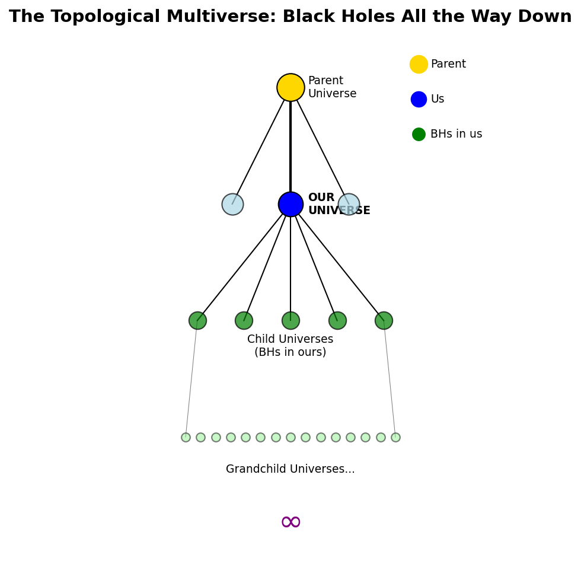

The Topological Multiverse: Black Holes as Universe Generators
Douglas H. M. Fulber • UFRJ • January 2026
⚠️ SPECULATIVE PAPER ⚠️
Abstract
If our universe is the interior of a black hole, every black hole in our universe contains another complete
universe. This creates an infinite fractal tree of universes—the topological multiverse. We explore the
structure, implications for fine-tuning (cosmic natural selection), and why this is a logical consequence of the
TARDIS framework.
1. The Hypothesis
Our universe = interior of a BH in "parent" universe
Every BH in our universe = interior contains a "child" universe

Figure 1: The topological multiverse as a tree structure. Each node is a universe;
branches are black holes creating new universes.
2. Cosmic Natural Selection
Universes with "good" constants (those that create stars and BHs) produce more offspring. This explains
fine-tuning without anthropic coincidence—it's evolution on a cosmic scale.
3. Communication
Impossible. Each universe is causally isolated. The only "message" between generations is the set of physical
constants, inherited from the parent BH's collapse conditions.
4. Conclusion
The Multiverse Is Topology
Not sciencefiction—a logical consequence of BH cosmology.
Ω is our "DNA," inherited from the parent universe.
References
Smolin, L. (1997). Life of the Cosmos. Oxford University Press.
Pathria, R. K. (1972). The Universe as a Black Hole. Nature 240, 298.